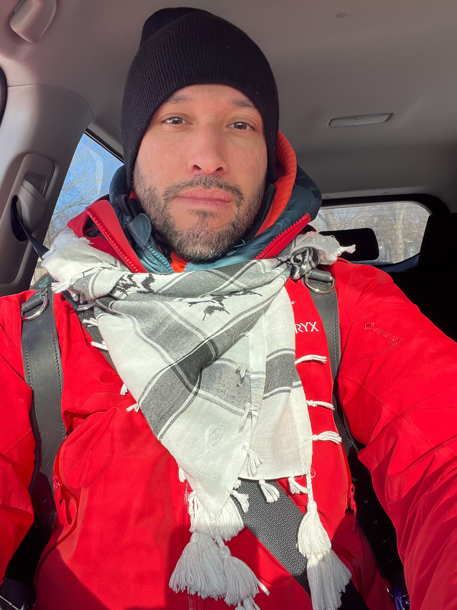

About the Photographer
Chris Rojas
"Photography is the act of witnessing. To be present with a camera is a commitment — to the people in the frame, to the moment, and to everyone who wasn't there."
Biography

Chris Rojas is a Seattle-based documentary photographer whose work spans nearly two decades of American political life. Rojas started his journalism career working for The Aaron Harber Show, an independent political talk show on PBS, which led him to photograph and film interviews at the Pentagon and embed with the multinational forces in Iraq.
From the streets of New York during Occupy Wall Street to the arrivals hall of Seattle-Tacoma Airport on the night of the Muslim ban, from the National Mall on Inauguration Day to the plywood-covered downtown Seattle blocks of the George Floyd protests — this body of work insists that ordinary people, in extraordinary moments, deserve to be heard and remembered.
Work — Selected Series
Prints
Fine art prints are available for select images from this archive. Each print is made to order and sized to suit the image. For inquiries — which photograph, what size, and any questions — reach out directly.
Assignments
Chris is available for photojournalistic assignments in the Seattle area and beyond — protests, political events, editorial, documentary, and on-the-ground coverage. If you have a project or assignment in mind, get in touch.
Support Independent Journalism
Documentary photography is independent work — no wire service, no staff position, no institutional backing. If this archive has informed or moved you, consider supporting it directly. Every contribution helps cover travel, equipment, and the time it takes to be present when it matters.